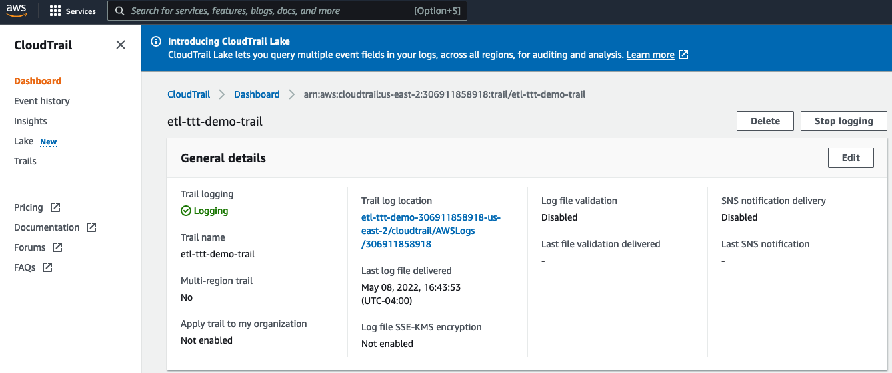

ORCHESTRATION & DATA ANALYSIS
In the Part 4 - Orchestration & Data Analysis - of this workshop you will combine the forces of AWS CloudTrail, Amazon EventBridge, AWS Glue Workflows and Amazon Athena to orchestrate the entire data pipeline - from the streaming of JSON data until the query analysis in Amazon Athena.
1. Understanding the Orchestration Flow¶
To understand the Orchestration flow, first you need to take a look at the pre-created resources you havefrom the CloudFormation Template for this lab.
Go to AWS CloudTrail console (switch to your right region if needed!) to explore the Trail created for your named etl-ttt-demo-trail

Note that this Trail is monitoring for write events for two paths in the etl-ttt-demo-${AWS_ACCOUNT_ID}-${AWS_REGION} Bucket as you can see in the following picture:
[ADD UPDATED PICTURE HERE WITH THE TWO DATA EVENTS - NEW CFN TEMPLATE!!!0

By having such Trail configuration, you will be able to leverage AWS Event Bridge during this lab to trigger (Step Function and Glue) Workflows as soon as streaming data lands in the trail-enabled S3 Bucket.
That is possible because once a file lands in this bucket it records a write event in the Trail. This write event further triggers an EventBridge Rule which, consequently, cat fire (Step Functionn and Glue) Workflows.
2. Creating Glue Workflow and Glue Event Based Trigger (via CLI)¶
In this lab, we will create a Glue Workflow that will get triggered upon a write event notification received by EventBridge. This workflow will then initiate a Crawler to immediatelly crawl the file that just landed in the S3 bucket
So, let's create the Glue Workflow followed by a Glue Trigger. To do this, run the following AWS CLI commands in sequence.
- First the Glue Workflow:
aws glue create-workflow --name etl-ttt-event-driven-workflow
- Then the Glue Trigger:
aws glue create-trigger \
--workflow-name etl-ttt-event-driven-workflow \
--type EVENT \
--name s3-object-trigger \
--actions CrawlerName=crawl_streammed_data \
--event-batching-condition "{\"BatchSize\": 2,
\"BatchWindow\": 900}"
After running both commands, go to the Glue Console and click on Workflows under the ETL section of the Glue Console's left menu. You will see a new Glue Workflow created there. Click on the radio button close to its name to see the workflow in the Graph Canvans as bellow:

Note: You can also see the Glue Trigger in the Trigger menu under the ETL section.
3. Creating Event Bridge Rule and Target (via CLI)¶
Now, let's create the EventBridge Event Rule followed by an EventBridge Event Target which is, of course, the Glue Trigger created in the previous step. Run the following AWS CLI commands in sequence to create everything.
- First the Event Rule:
aws events put-rule \
--name "total-clicks-rule" \
--event-pattern "{ \
\"source\": [\"aws.s3\"], \
\"detail-type\": [\"AWS API Call via CloudTrail\"], \
\"detail\": { \
\"eventSource\": [\"s3.amazonaws.com\"], \
\"eventName\": [\"PutObject\"], \
\"requestParameters\": { \
\"bucketName\": [\"${BUCKET_NAME}\"], \
\"key\": [{\"prefix\": \"etl-ttt-demo/output/gluestreaming/total_clicks/\"}]
} \
} \
}"
- Then the Event Target:
aws events put-targets \
--rule total-clicks-rule \
--targets "Id"="glueworkflow-totalclicks","Arn"="arn:aws:glue:${AWS_REGION}:${AWS_ACCOUNT_ID}:workflow/etl-ttt-event-driven-workflow","RoleArn"="arn:aws:iam::${AWS_ACCOUNT_ID}:role/AWSEventBridgeInvokeRole-etl-ttt-demo" \
--region ${AWS_REGION}
After running both commands, go to AWS EventBridge console. (switch to your right region if needed!).
On the left side menu, click on Rules, then click on top of the rule total-clicks-rule to open its details. You should see under the Event Pattern tab the following:

This pattern is basically saying that this EventRule is watching for every PutObject event that occur in the bucket/prefix specified in there.
Click on the Targets tab. Here, you can see that the Target Name points to the Glue Workflow you just created etl-ttt-event-driven-workflow. Also that it has a EventBridge Role, with all the required permissions, associated with it. This Role has also been created as part of the CloudFormation template.

4. Triggering Orchestration & Following The Flow¶
Now, it is time to push data into the Kinesis Data Stream. You will run the Kinesis Ingestion Python Script you saw in the previous lab: Part 3 - Glue (Studio) Streaming - to push data into the stream.
To start the script, run the following in the Cloud9 Enviroment:
cd ~/environment/ttt-demo/
python PutRecord_Kinesis.py
You will start to see data flowing on your Cloud9 Terminal, wait for few seconds for this to complete. In the meantime, go back to the Glue Studio Console and verify that the Glue Streaming Job is still running.
Once the script finishes and you have verified that the Glue Streaming Job is running. Go back to the AWS Glue Console and look for your workflow. Refresh the Workflows screen and select your etl-ttt-event-driven-workflow.

Then click on the History tab at the bottom of the page, select the Run ID you see there and click on View run details button to see the workflow flowing:

While the workflow is running, you can check the Glue Crawler that the workflow is triggering. You can also go to you S3 Bucket and see the files that were generated there by the AWS Glue Streaming Job which was fed by the Kinesis Data Stream (after running the Kinesis Ingestion Script):
Running Crawler's name: crawl_streammed_data
Streaming Job's target path: s3://etl-ttt-demo-${AWS\_ACCOUNT\_ID}-${AWS_REGION}/etl-ttt-demo/output/gluestreaming/total_clicks/
NOTE: To keep this workflow from getting trigger multiple times, delete it now as you don't need it anymore!
5. Exploring and Analyzing Table's Data Cataloged in Glue Data Catalog¶
Once the workflow completes, you will noticed that the Crawler triggered by the workflow actually produced 1 new table. In the Glue Console, go to Tables to see a new table named total_clicks. (Feel free to explore this table's details as much as you want!)

In the Glue Console's Table page, click on the checkbox near the total_clicks table, then click on the Action dropdown button to launch the table in the Amazon Athena Console. (Hit the Preview Button if a pop-up is prompted)

In the Athena Query Editor Console, you may see a blue banner at the top that says "Before you run your first query, you need to set up a query result location in Amazon S3.". Just click on the View settings button you see there, then click on the Manage button in the far top right of the page, then click on Browse S3. Search for a bucket that starts with aws-glue-assets- and select it. Complement this bucket with /athena-output/ and hit Save

Click on Editor to start running your queries. In the Query 1 tab, erase everything there, paste and Run the following query:
SELECT * FROM "AwsDataCatalog"."glue_ttt_demo_db"."total_clicks" order by 3 desc limit 10;
You should see the query results at the bottom:

Now, you are going to create a View on top of this table to allow for aggregation of the underlying files that compose this table's data.
Run the following command to create a view that is meant to select the Top 5 customers aggregated by their number of clicks in a particular website: (That's the web_page streaming data you have captured!)
CREATE OR REPLACE VIEW "tpc_customer_inter" AS
SELECT
"c_full_name"
, "c_email_address"
, "sum"(CAST("total_clicks" AS integer)) total_clicks
FROM
"total_clicks"
GROUP BY 1, 2
ORDER BY 3 DESC

In a new Query Tab, run below query to query the view now:
SELECT * FROM "glue-ttt-demo-db"."tpc_customer_inter";
Note down the results you see:
Now, go back to your Cloud9 Enviroment and run the Kinesis Ingestion Python Script again:
cd ~/environment/ttt-demo/
python PutRecord_Kinesis.py
Allow for it to complete and wait for about 30-60 seconds and re-run the last Athena query.
SELECT * FROM "glue-ttt-demo-db"."tpc_customer_inter";
Note: If you noticed that above results hasn't changed. It might be that your calendar Year, Month, Day, or Hour has changed (most probably the Hour). Run the crawl_streammed_data crawler again to update partitions or try the MSCK REPAIR TABLE `total_clicks`; command from within Athena itself.
You have reached to the end of this lab. If you want, you can keep pushing more data into your Kinesis Data Stream by running the Kinesis Ingestion Python Script multiple times and allowing few seconds each time for the Glue Streaming Job to process it. Once you are ready, manually stop the glue-streaming-job and move to Part 5 - Machine Learning with Glue & Glue Studio Notebooks.